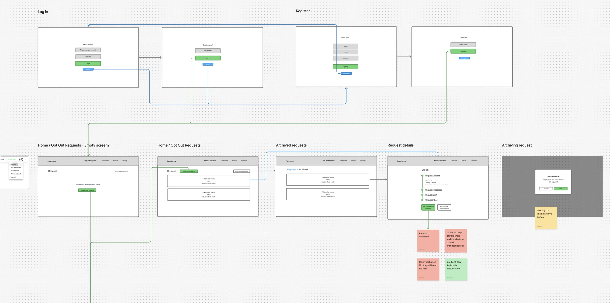
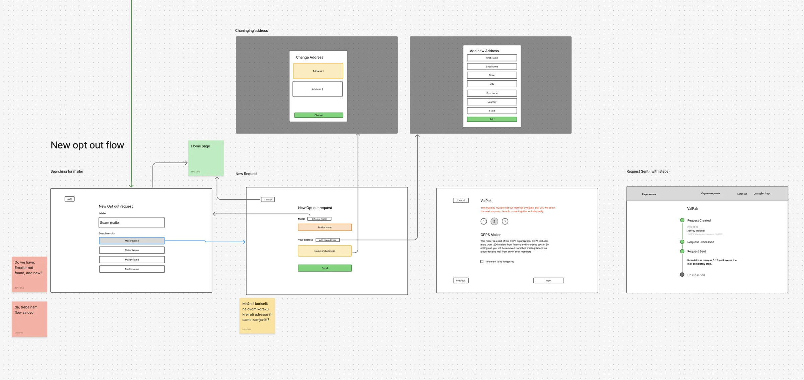
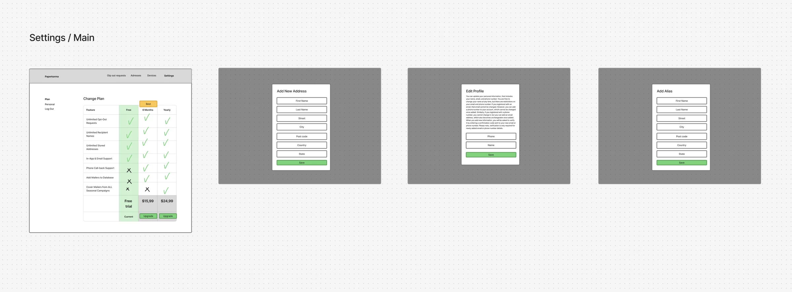
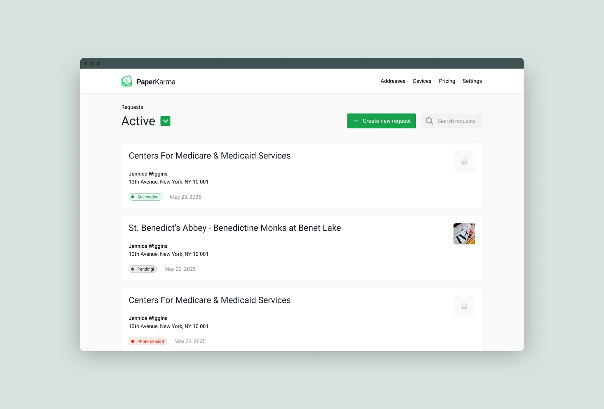
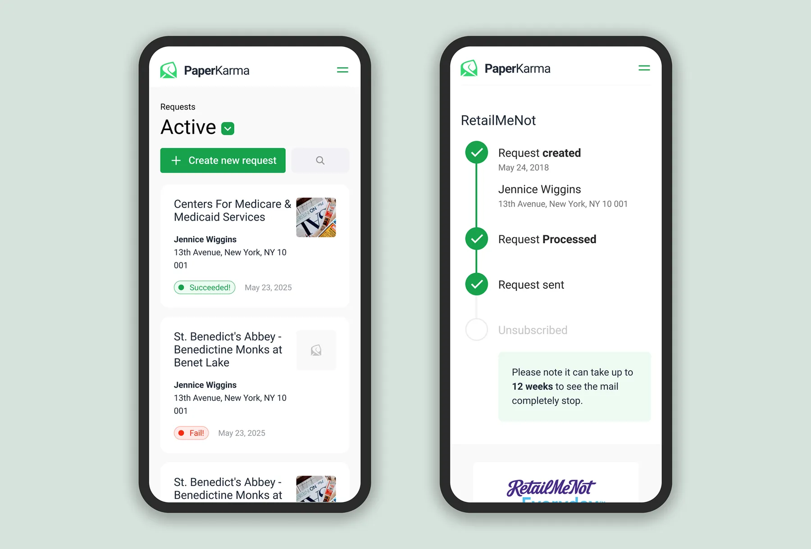
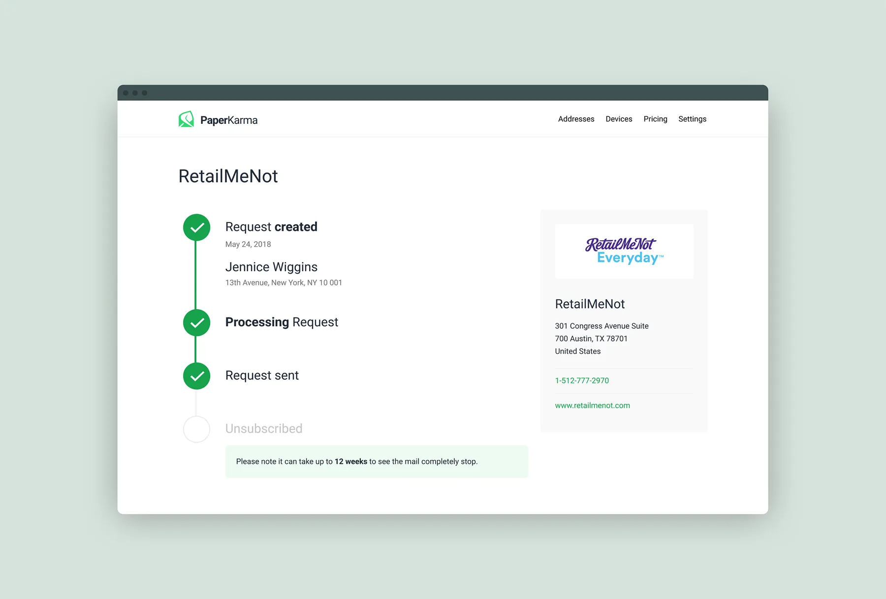
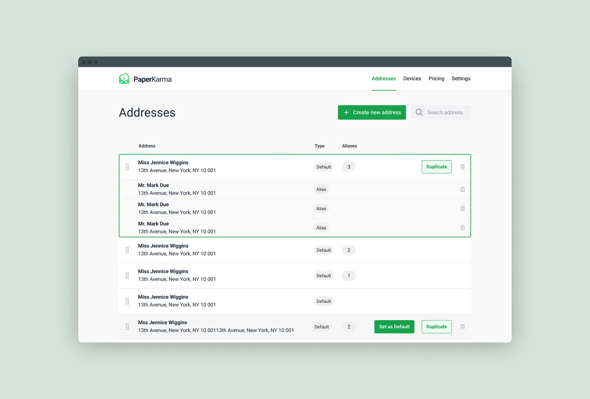
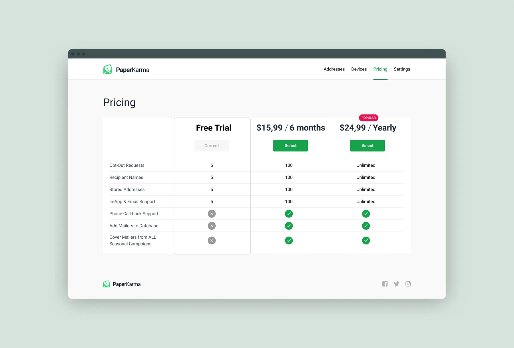

UX/UI dizajn · Web aplikacija
PaperKarma
PaperKarma pomaže ljudima zaustaviti neželjenu fizičku poštu. Redizajnirala sam način na koji korisnici kreiraju zahtjeve za odjavu i prate njihov napredak, na računalu i mobitelu.
Podaci o projektu
Izazov
Odjava funkcionira drukčije za svakog pošiljatelja: neki traže dodatne potvrde, neki odabir organizacije, a drugi poseban kod. Nakon slanja korisnici moraju znati i što se događa s njihovim zahtjevom. Izazov je bio podržati sve te scenarije, a da jednostavni slučajevi ne postanu složeni.
Moj pristup
Najprije sam razradila sve tokove, od prijave do postavki računa, a odjavu oblikovala kao numerirane korake koji se prilagođavaju vrsti pošiljatelja, tako da korisnik vidi samo korake koji se odnose na njega. Svaki zahtjev prikazuje napredak na vremenskoj liniji statusa, od kreiranog i obrađenog do poslanog i odjavljenog. Aktivni i arhivirani zahtjevi su odvojeni, početno stanje vodi nove korisnike do prvog zahtjeva, a nepovratne radnje poput arhiviranja zahtjeva ili uklanjanja uređaja traže potvrdu.
Dizajniranje za mnogo scenarija naučilo me da krenem od toka, a ne od ekrana: kad je logika razrađena, sučelje može ostati jednostavno.
Proces
Korisnički tokovi i wireframeovi
Povezani low-fidelity ekrani koji pokrivaju sve ključne tokove, uključujući različite scenarije odjave.



Finalni dizajn






